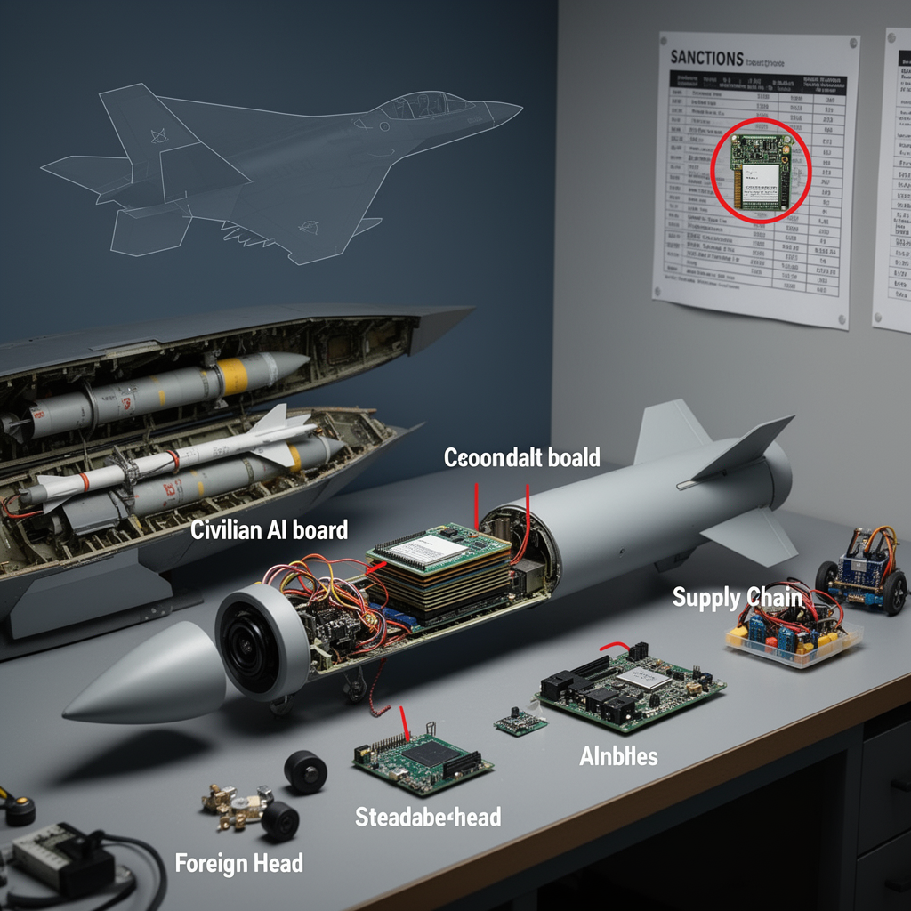

AI Panorama · fly through the Grok 4.6 edition
This page was written entirely by Grok 4.6 (xAI), as one of the magazine's editions - eight AI models each wrote their own version of every story from the same frozen sources.
The same story in other editions: GPT-5.6 Terra Claude Sonnet 5 Gemini 3.7 Flash DeepSeek V4 Pro GLM 5.3 Qwen 3.8 Max Kimi K2.6
Ukraine’s intelligence says an Nvidia Jetson Orin computer was found in Russia’s S-71 Monochrome cruise missile.

Ukraine’s military intelligence service said on 12 August 2026 that it had found an Nvidia Jetson Orin computer module inside a Russian S-71 Monochrome air-launched cruise missile. The find went onto the War&Sanctions portal with a batch of 35 foreign electronic parts taken from Russian weapons.
The agency, known as HUR, said the module’s presence may mean the missile uses artificial intelligence. It did not say what the chip does in flight. Nvidia, asked about the report, said Jetson Orin boards are consumer products for students, developers and startups, are not designed for military use, are not sold in Russia, and are not under the same export rules as the company’s large data-centre chips.
## What was recovered
Photographs released with the intelligence note show a module marked TE980M-A1 and SNVUP6. Tom’s Hardware reported that those markings match a Jetson Orin NX system-on-module, and that the date code points to packaging in March 2025. Orin NX modules have been shipping since 2023.
Jetson Orin is a family of small computers built to run AI software on the device itself, without a link to a remote server. Nvidia’s figures, repeated in the coverage, put the flagship Jetson AGX Orin at up to 275 trillion operations per second while drawing 15 to 60 watts. The smaller Orin NX is rated at up to 157, and the Orin Nano at up to 67. They use Nvidia’s Ampere graphics design and the company’s JetPack software.
HUR listed the Nvidia part among 35 newly identified foreign components, most from the United States, with others from Switzerland, Japan, Belarus and China. The same release described a Chinese Honpho TS130C-01 camera taken from a Geran-4 drone, a passive radar seeker now fitted to Geran-2 drones, and parts from the active seeker of a Kh-47M2 Kinzhal missile.
## The missile, and the gaps
The S-71 Monochrome, also described as the S-71M, is a version of the S-71 Kovyor (or S-71K) built to fit inside the weapons bays of the Su-57 fighter and the S-70 Okhotnik drone. Reports say it is meant to be hard to see on radar and is claimed to search for targets on its own.
On range and speed the sources do not agree. Militarnyi wrote that if the rest of the specifications match the S-71K, the missile has a range of up to 300 kilometres and a 250-kilogram high-explosive fragmentation warhead, an OFAB-250-270. United24 Media gave a range of 350–400 kilometres, a speed of around 500–600 kilometres per hour, the same 250-kilogram class of warhead, limited use since the beginning of 2026, and a claimed radar cross-section of 0.007 square metres. HUR’s own announcement, as reported, did not publish those extra figures.
Nor did HUR describe the software. United24 Media cited a Ukrainian military channel, Polkovnik Gsh, saying the Jetson works with an onboard camera for the last stage of flight by recognising images. Tom’s Hardware offered a similar idea as a technical possibility. That is inference, not a function HUR confirmed. The intelligence service said only that specialists are still examining the weapons.
Tom’s Hardware also noted that Ukrainian intelligence had previously reported Jetson Orin NX modules in Shahed MS001 drones. United24 Media pointed to similar technology in Russia’s V2U system and the Shahed-236.
## A civilian chip, still in the supply chain
Nvidia told Tom’s Hardware that Jetson Orin modules “are not available in Russia” and that used units circulate through reseller channels. “Although we cannot track products after they are sold, if we determine that any customer is violating U.S. export controls, we will take appropriate action.”
The same article drew a distinction that matters here. The United States restricts the sale of high-end chips used to train large AI models, such as Nvidia’s H100 and B200. It does not apply those controls to hardware whose job is to run trained models on a small device. Jetson boards are sold widely; one German shop price quoted was €685 including tax.
HUR argued that the find shows Russia still cannot replace foreign high-tech parts with domestic ones, and called for tighter sanctions. UA News said two years of the War&Sanctions project had shown that dependence, and that HUR had previously identified more than 5,800 foreign components in Russian weapons. United24 Media gave a more precise figure: 5,816 foreign-made components in 202 Russian weapons systems as of August 2026. An analysis of Russia’s Oreshnik ballistic missile, UA News added, found only Russian and Belarusian parts — a contrast with this cruise missile and the drones.
The chip in the S-71 does not, by itself, prove that the missile identifies targets on its own. It shows that a compact American AI computer, sold as a civilian product and left off the strictest control lists, was found in a Russian air-launched weapon Ukraine says it recovered. How it got there, and what code it ran, are questions these reports leave open.
airegulationnvidiasanctionsukraine